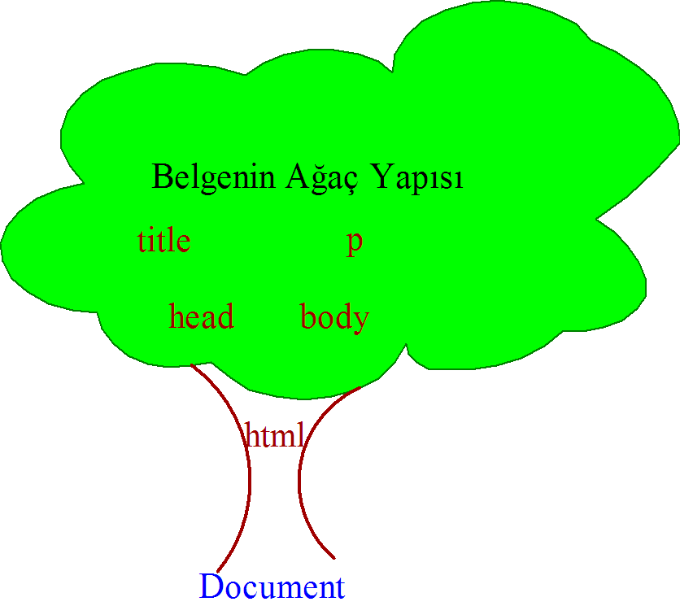
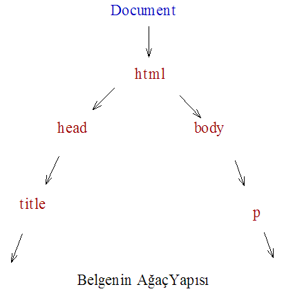
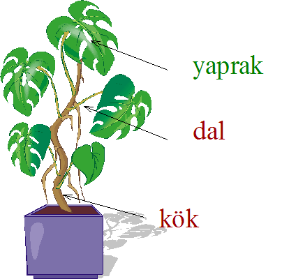
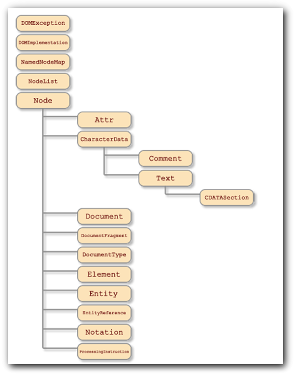
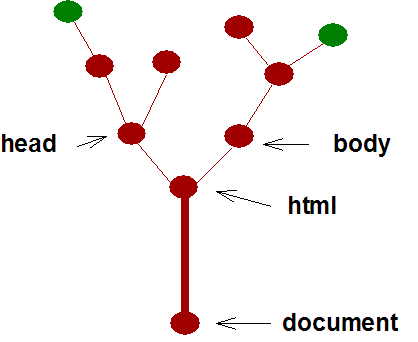

JavaScript Temelleri
Bölüm 19
W3C Belge Nesne Modeli (W3C Document Object Model) (W3C-DOM)
Bölüm 19 Sayfa 1
19.1 - window Nesnesinin document Alt Nesnesi (Belge Yapılanması)
JavaScript window nesnesinin document alt nesnesi, geniş içeriği ve kuramsal kapsamı nedeni ile tüm çalışmalarda başlı başına özel bir bölümde incelenmektedir. JavaScript document alt nesnesi, web sayfasının ana amacı olan belgeyi kapsar. Bir web sayfası, bir belgenin yapılandırılmış şeklidir. Yapılandırma organizasyon ile ilgilidir. Organizasyon belirli çalışma yöntemleri gerektirir. Bu çalışma yöntemlerini istersek standartlar olarak da adlandırabiliriz.
Belgeler, başlık, paragraf, tablo gibi sayfa öğelerini kapsar. Yapılandırma, belgelerin sayfa öğelerinin belirli bir öntanıma göre düzenlemesini öngörür. Belirli bir standarda göre yapılandırılmış belgelerde aynı türden sayfa öğeleri bulunur. Yani belge yapısı standart hale getirilmiş olur. Blege yapılarının satndart hale getirilmesinden sonra, bu yapıların çeşitli ortamlarda anlamlı sonuçlar verecek şekilde çözümlenmesi daha kolay ve daha sistematik bir işlem olacaktır.
Belge yapılanması için kabul edilmiş olan temel yapılanmanın SGML temeline dayalı bir yapılanma yöntemi olması uzun araştırmalardan sonra kabul edilmiştir. SGML gerçek bir devrim olarak düşünülebilir. Bu bir tür yapılanmanın genel kuralları olarak işlev yapar. SGML temeline dayalı, XML, HTML gibi uygulama yapaılanma yöntemleri oluşturulmuştur. SGML uygulama yapılanmalarının oluşturulması için sonsuz olanaklar sağlar. Ne var ki bu olanaklar sınırlı sayıda kullanılabilir, çünkü her yapılanmanın gerçek sonuçlara dönüştürülebilmesi için çözümleyicilerin de geliştirilmesi gerekmektedir.
Web yayınları, HTML yapılanmasını çözümleyebilen çözümleyicilerin geliştirilmesi ile yaygınlık kazanmıştır. Buna XML çözümleyicileri de eklenmiştir. XHTML yapılanması, bir XML alt yapılanma türü olarak geliştirilmiştir. Günümüzde dah en az on yıl süreceği öngörülen HTML5 yapılanması hazırlıkları sürmektedir.
19.2 - Belge Öğelerinin Ağaç Yapısı
W3C-DOM belge yapılanmasını destekleyen belge çözümleyiciler, çözümlenmiş sayfa kodlarını ağaç yapılanması şeklinde organize ederler. Bu yapıda her öğe bir düğüm (node) olarak yerleştirilir. Bu şekilde düğümlerin düzenlenmesi, yenilenmesi, mevcut ağaç yapısına yerleştirilmesi niteliklerinin değiştirilmesi daha kolay gerçekleştirilebilir. Burada dikkat edilecek nokta her düğümün belirli bir düğüm sınıfına ait ayrı bir nesne örneği olduğudur. W3C-DOM belge yapılanması alışılmışın dışındadır. Örnek olarak paragraf elementi ayrı bir düğüm iken, paragraf içerikleri farklı tipte birçok düğümden oluşur. Boşluklar, noktalama işaretleri gibi tüm öğeler ayrı bir yapıtaşı olarak ağaç yapısında yerlerini alırlar. Fakat çoğu zaman kullanıcıların fazla ayrıntıya girmeleri gereği olmaz.
En basit bir HTML yapılanmasının bile ağaç yapısı ilk bakışta alışılmamış gelebilir. Örnek olarak,
DTD açıklamaları <html> <head> <title>Ağaç Yapısı</title> </head> <body> <p> Belgenin Ağaç Yapısı </p> </body> </html>
Şematik olarak bu kodların ağaç yapısı aşağıdaki gibidir:

Şekil 19.2-1 : (X)HTML Kodlamasında Belgenin Ağaç Yapısı
Programcılar için ise, kodlanmış belgenin W3C-DOM spesifikasyonuna göre çözümlenmiş halinin ağaç yapısı daha ilginç olabilir. Burada kök (en tepe) nesne, tüm belgenin tek kök elementi olan Document düğümüdür. Element düğümlerinin en üst düzey düğümü ise, <html> elementidir ve iki eşdüzey (kardeş) (sibling) alt nesnesi bulunmaktadır. Bunlar, <head> ile, <body> nesneleridir. Bu nesneler eşdüzey (kardeş) nesnelerdir, çünkü üst düzey nesneleri (ana-babaları) aynıdır. Bu kardeş nesnelerin de kendi alt nesneleri vardır. Bunlardan <head> elementinin alt nesnesi <title> elementi, <body> elementinin alt nesnesi <title> elementidir. Bu son iki nesne eşdüzey değillerdir, çünkü üst düzey nesneleri farklıdır. Bu son iki nesnenin içerikleri de, birer alt nesne olarak hiyerarşik yapılanmada yerini alır. İçeriklerin ayrı alt nesneler olarak organize edildiğine dikkat edilmelidir. Belgenin ağaç yapısının, basitleştirilmiş hiyerarşik yorumu aşağıda görülmektedir.

Şekil 19.2-2 : Belgenin Ağaç Yapısının Hiyerarşik Yorumu (Sadece Element Düğümleri ile Sınırlı Basitleştilmiş Görünüm)
Aslında, şekil 19.2-2 ye bakılınca, çözümlenmiş nesnenin düğüm yapısının kodlanmış belgeye göre çok daha karmaşık olduğunu görüyoruz. Ayrıca, çözümlenmiş belgenin düğüm organizasyonu, her belge çözümleyiciye göre diğerinden farklı olabilir. Yani, bilinen bir düğümden, üç düzey yukarı çıkılıp, üç düzey ileriye gidilince, erişelecek düğüm her belge çözümleyicide farklı olabilir. Bu açıdan belirli bir düğüme erişim için, bu düğümün id niteliği gibi değişmez ve belge içinde sadece birt ek düğümün sahip olabileceği bir nitelikten yararlanmak doğru düğüme ulaşmak adına tutulabilecek olan en garantili yol olabilir.
W3C-DOM API deki interface olarak belirtilen arabirimlerin girdilieri (X)HTML kodlama değerleri, çıktıları ise API 'nin hedeflediği dildir. Belge çözümleyiciler, JavaSCript API yi desteklemektedirler. Bu yüzden çözümlenmiş belgenin düğüm noktaları, JavaScript program adımları ile ulaşılabilecek değerler olması gerekir. Gerçekten, W3C-DOM API yi desteklyen bir belge çözümleyici tarafından çözümlenmiş sayfa kodlarında, yukarıdaki şekillerde görülen ve JavaScript program adımları ile ulaşılabilen bir ağ yapısını oluştururlar.
Oluşmuş olan ağın, her düğüm noktası farklı bir düğüm türü olabilir. W3C-DOM API, Coment düğüm tipi, Document düğüm tipi, Attr (attributes) düğüm tipi, Text düğüm tipi gibi 11 farklı tip düğüm tipi tanımlamıştır. Her düğüm tipi belirli bir nesne tipidir. Düğüm noktaları, belirgin nesne türlerinin örnekleridir.
JavaScript programlama dilinde, nesneler, bellek referansları kanalı ile yöntilirler. JavaScript programlama dili, bellek referanslarına doğrudan erişimi desteklemez. Bellek referansları JavaScript yorumlayıcısındaki hazır yöntemlerden yararlanılarak elde edilebilir ve değişkenlere atanarak, bu değişkenler yardımı nesnelere erişilebilir. W3C-DOM API de bu hazır yöntemlerden biridir. Arayüzlerde tanımlanmış yöntemlerden yararlanılarak, JavaScript değişkenlerine atanabilecek bellek referansları elde edilebilir ve bu değişkenler yardımı ile düğümü oluşturan nesne tipinin W3C-DOM API de tanımlanmış olan özelliklerine ulaşılabilir.
19.3 - Tarihsel Bilgiler
İlk Javasccript programlama dili 1996 da devreye girmiştir. Netscape tarafından yapılan bu atağa, Microsoft da JScript yorumlayıcısı ile karşılık vermiştir. Her iki yorumlayıcı başlangıçta sadece form değerlendirmesi ve resim rolloverleri için kullanıldığından başlangıçta fazla bir sorun yaratmamıştır. Bu devreye Legacy DOM devresi adı verilmektedir.
JavaScript'in kullanışlı yapısı sonucunda, kullanım yöneleri kısa sürede artmıış ve büyük ölcüde sayfa görüntüsünün dinamik olarak değiştirilmesi için kullanılır olmuştur. Kullanım yönleri artmış, JavaScript DOM API'si genişlemiş uyumsuz yönler artmış ve ticari kaygılarla uyumsuzlar arttırılmıştır. Bu devereye geçiş dönemi DOM'u (intermediate DOM) adı verilmiştir. Bu zaman aralığı, geliştiricilerin büyük sorunlar yaşadığı dönemlerdir ve sonuçta, tüm uyumsuzların tek çözümü olan standartlaşma dönemi başlamıştır.
Standartların oluşturulması ve bilimsel koordinasyon görevini üstlenen W3C 1996 da kurulmuştur. JavaScript'in standartlaştırılması başka bir kanaldan yürütülmüş ve JavaScript standardı ECMAScript adı altında 1997 de yayınlanmıştır. Günümüzde, tüm belge çözümleyiciler ECMA-262 standartlarını desteklemektedirler. Bu açıdan, ortak olarak desteklenebilen programların yazılmasında en azından programalama dili açısından bir standartlaşma sağlanabilmiştir.
W3C, ilk DOM standardını DOM düzey-1 adı ile 1998 de gerçekleştirilmiştir. Bunu 2000 de DOM-düzey-2 ikinci sürüm izlemiştir. DOM-düzey-1 büyük ölcüde ortak olarak desteklenebilen programların yazılabilme yolunu açmıştır. Programcılar bu standardı bir ortak çözüm yöntemi olarak benimsemiş ve kullanmaya başlamışlardır. Belge çözümleyicilerin üreticileri de giderek W3C-DOM uyumlu sürümler çıkarmaya özen göstermişlerdir. DOM-düzey-1 den sonra, eski nesil DOM yöntemleri büyük ölcüde çağdışı kalmış fakat eskiye uyum kaygısı sonucunda, günümüzde dahi desteklenmeye devam edilmektedir. Fakat doğal olarak, bu desteğin uzun süre devam etmeyeceği, yeni programların güncel yöntemlerle oluşturulmasının ve eski programların güncellenmesinin gerekli olduğu belirtilmektedir.
W3C, DOM spesifikayonlarının ikincisini, 2000 yılında açıklanmıştır. DOM düzey-2 çok daha detaylı ve modüler olarak yayınlanmıştır. günümüzde, önde gelen belge çözümleyicilerin son sürümleri, DOM düzey-2 yi büyük ölçüde desteklemektedirler.
W3C, DOM düzey 2 spesifikasyonları, sitesinden indirilebilir . Bu spesifikasyon,
kısımlarından oluşmaktadır.
W3C-DOM Düzey 2 Core (Çekirdek) standardı, XML ve XHTML belgeleri ile kullanılmak üzere yeni yöntemleri içermektedir. Bu yöntemler ileri de geçerli olacaklardır. Bu yüzden, çalışmalarımızda sadece çekirdek yöntemlerini uygulayacağız. W3C-DOM Düzey 2 HTML belgelerinde uygulanan eski W3C-DOM önccesi yöntemleri düzenlemek amacı ile hazırlanmıştır. Günümüzde eskiye uyum amacı ile desteklenmektedir ve bu desteğin ne kadar devam edeceği belli değildir. Bu nedenle zaman aşımına uğramış bu yöntemlerde uzak durmaya çalışacağız.
W3C-DOM Düzey 2 standardı çok geniştir. Burada ancak çok kullanılan çekirdek ve satıriçi stil yöntemleri üzerinde durulabilecektir. Programcılar, spesifikasyonun tümünü inceleyerek gerektiğinde yeni yöntemleri uygulayabileceklerdir.
W3, DOM standartlarının en yenisini, 2004 de DOM düzey 3 adı ile yayınlanmıştır. DOM-düzey-3'ün desteği giderek artmaktadır. Destek yeterli olunca, ikincisinden fazla farkı olmayan bu spesifikasyon da uygulanabilecektir.
19.4 - W3C-DOM API
W3C-DOM yani W3C Belge Nesne Modeline göre, bir belge çözümleyicide çözümlenmiş olan kodlanmış belgenin yapısı hiyerarşik bir düzenle yapılanmış düğümlerden (Nodes) oluşmaktadır. Her düğümün üst (parent) alt (child) ve eşdüzey (sibling) düğümleri olabilir. Belgenin en üst düzey düğümü, her belgede sadece bir tane bulunabilen kök düğümüdür.

Şekil 19.2-3 : Belgenin W3C-DOM API ye göre Ağ Yapısı Yorumu
Yukarıda şemada görüldüğü gibi, belge yapılanmasının W3C-DOM API'sinin ağ yapısı yorumuna göre, belge yapılanması, belge köküne eklenen birleşim noktalarından, veya düğümlerden oluşur. başka düğüm noktalarının kendine eklenmesine olanak veren düğümlere dal, başka düğümlerin kendine eklenmesine olanak vermeyen sonlandırıcı düğümlere yaprak adı verilir.
W3C-DOM API sinin birinci sürümünde, 12 düğüm türü öğesi belirtilmiştir. Bu sayı ikinci ve üçüncü sürümlerde de aynı kalmış fakat tanımlar geliştirilmiştir. Çözümlenmiş sayfa yapılanmasında bulunabilecek 12 düğüm tipi aşağıda görülmektedir:
W3C-DOM CORE spesifikasyonları, çözümlenmiş belgenin yukarıdaki şekilde görüldüğü gibi sayfa yapısına erişmek ve bu yapıda dinamik değişikler gerçekleştirilmesini sağlayacak programların yazılmasını sağlayacak API lerin yapısını tanımlamaktadır.
W3C-DOM API de API nin açılılmı Application Programming Interface yanı Uygulama Programlama Arayüzüdür. Bir programlama arayüzü, bir tür çevirici görevi yapar. Arayüze veri olarak beslenen bir programlama dili öğeleri, arayüzün içinde dönüştürülerek, başka bir programlama dilinin ögeleri haline getirilir. Arayüzün iç yazılımı önemli değildir, önemli olan, arayüzün giriş verileri ve sonuç çıktılarıdır.
W3C-DOM spesifikasyonları Interface (Arayüz) tanımları vermektedir. Inteface tanımları, Java sanal sınıfları (abstract classes) tanımlarına benzer. Bu tanımlarda giriş ve çıkışlar açıkça belirlenmekte ve arayüzün iç yazılımı tamamen özgür bırakılmaktadır.
W3C-DOM API arayüzlerinin girişleri (X)HTML kodlamasındaki sayga ögeler, yani element adları, niteli adları ve değerleri gibi sayfa öğeleridir. Çıktılar ise, her scripting programlama dilinde olabiir. Güncel olarak sadece W3C-DOM JavaScript API kullanılmaktadır ve W3C-DOM JavaScript API, W3C-DOM API olarak adlandırılmaktadır.
Düğüm oluşturabilecek ögeler arasında, (X)HTML sayfa kodlarında yer alan Element gibi ögeler dışında, metinler (Text), belge parçacıkları (DocumentFragment), notasyon gibi düğüm türleri de bulunmaktadır. W3C-DOM CORE API de belirtilmiş 12 düğüm oluşturabilen arabirim tanımları dışında, sayfa yapılanmasına katılmayan, NodeList gibi NamedNodeMap Attr gibi, benzer yapıda düğüm topluluklarının yönetimini tanımlayan arabirim türleri de bulunmaktadır.
W3C-DOM CORE Arabirimlerinin hiyerarşisi, yani özelliklerin kalıtım yolu ile düğümden düğüme aktarılma sistematiği sitepoint sitesinden alınmış olan aşağıda görülen şemada belirtilmiştir.

Şekil 19.2-4 : W3C-DOM CORE Düzey-2 Spesifikasyonunda Bulunan Arabirimlerin Hiyerarşisi
Yukarıdaki şemada açıklanan W3C-DOM CORE Düzey-2 Spesifikasyonunda tanımlanan arabirim nesnelerinin hiyerarşik yapısı sonucu, üst sınıf arabirim nesnelerinin özellikleri kalıtım yolu ile alt arabirim nesne sınıflarına aktarılır.
Her belge çözümleyicinin W3C-DOM API arabirimleri iç yazılımları birbirlerinden farklıdır. Bunun sonucu olarak her belge çözümleyicinin varsaydığı çözümlenmiş sayfa kodlarının sanal düğüm yapılanması da birbirinden farklıdır. Yine de aşağıda görüldüğü gibi, sayfa kodlamasına koşut (paralel) bir ortalama düğüm yapısının her belge çözümleyicide az çok farklılıklar ile gerçekleştiği varsayılır.

Şekil 19.2-5 : Belgenin W3C-DOM API ye göre Ağ Yapısnın Şematik Yorumu
Yukarıda görülen basitleştirilmiş şematik ağ yapısı da aynen bir önceki belge yapısı yapısı gibi, ilk düğümün document düğümü olduğunu açıklamaktadır. Basitleştirilmiş ağ yapısında document düğümünün sadece bir tek element alt düğümü içermekte gibi görünmesine karşın gerçekte, daha başka tipte düğümler de bulunmaktadır. Document tipinde document düğümünün, Element tipi tek alt düğümü, belge kodlanmasında kök element olan html elementi düğümü olmaktadır. Ağ yapısı bundan sonra iki yöne doğru gelişmektedir. Yukarıdaki şeklin basitleştirilmiş olduğu, gerçek dallanmanın çok daha karmaşık olduğu daima gözönüne alınmalıdır. Kullanıcılar ağın yapısını tahmin edip üç ileri eşdüzey düğümden sonra gelen düğümün ikinci niteliği gibi ifadelerle ağ içinde gezinmekten kaçınmalıdırlar.
Çözümlenmiş belge yapılanması içinde kök düğümün document düğümü olması, sadece şekil 19.2-3 ve şekil 19.2-5 deki belge yapılanması içinde düğümlerin üst/alt düzey hiyeraşisini ilgilendirir. Şekil 19.2-4 de görülen arabirim sınıflarının hiyerarşik yapısı ve bunun sonucu olan arabirim kalıtım sistemi, sayfa yapılanması ile hiçbir şekilde ilgili değildir. Şekil 19.2-4 de görüldüğü gibi, yazılım açısından bazı arabirimler hiçbir kalıtım düzeni içinde değilken, bazılarının kök tipi Node arabirim tipidir ve Document düğüm tipi, Node arabirim tipinin bir alt nesnesi olarak Node arabirim tipinin özelliklerini katımla elde eder. Yani, document düğümü belge yapılanmasında kök düğüm iken, Document arabirimi, Node arabiriminin bir alt nesnesidir. Diğer arabirim tipleri için de kalıtım sistematiği benzer olarak şekil 19.2-4 den izlenebilir.
W3C-DOM API arabirimlerinin iç yazılımları, belge çözümleyiciden belge çözümleyiciye farkı olmasına karşın, arabirim giriş ve çıkışları, spesifikasyonda kesin olarak belirlenmiştir. İzomorfi prensibi, aynı program adımlarının her belge çözümleyicide aynı sonuçları gerektiğini belirtir. Ne var ki izomorfi sadece kuramsal olarak geçerlidir. Pratikte, W3C-DOM Düzey 2 CORE API yi bile tam olarak hiçbir belge çözümleyici destekleyemez. Daha kötüsü çok nadir olmakla birlikte, desteklendiği belirtilen bazı yöntemler bile bazen desteklenmeyebilir. En kötü destek de, en çok kullanılan Internet Explorer belge çözümleyicisindedir. Bu belge çözümleyicisinin son sürümü olan MS IE 8 de hatalar kısmen de olsa düzeltilmiştir. Fakat yine de, her programın çeşitli belge çözümleyicilerinin en son sürümlerinde denenmesi ve destek yetersizse, uygulanan W3C-DOM API düzeyini düşürülmesi hatta, W3C-DOM öncesi yöntemlerin kullanılması gerekebilir.
19.5 - DOMString tipi
W3c-DOM da karakter dizgisi olarak kullanılan DOMString UTF-16 kodlamasına göre 16 lık bit katarları olarak tanımlanmıştır. Gerek java gerek ECMAScript UTF-16 kodlamasını kullandıklarından uyum sorunu ortya çıkmammaktadır. Fakat, HTML ve XML UCS (ISO/IEC 10646) spesifikasyonunu kabul ettiğinden, bazı durumlarda kaynak kodunda tek sayısal karakter referansı, iki tane UTF-16 sekansına karşı gelebilir. Bu durum kullanıcıyı etkilemez.
HTML karakter yazılımına duyarlı değilir bu nedenle element adları HTML için küçük veya büyük harflerle yazılabilir. XML ise karakter yazılımına duyarlıdır ve tanımlanmış element isimleri, tanımlandığı gibi yazılmalıdır. XHTML bir XML türü olduğundan, element isimleri DTD de tanımlanmış olduğu şekilde küçük harflerle yazılmalıdır.
19.6 - W3C-DOM Düzey 2 Çekirdek (CORE) Yöntemleri Spesififasyonu Temel Arabirimleri
W3C-DOM Temel arabirimleri, çok geniş kapsamlıdır ve bir çok tanımı kullanıcıdan çok arabirim yazarlarını ilgilendirmektedir. Bu nedenle, burada yapılacak tanım spesifikasyonlarının incelenmesi kullanıcıların ilgilenmesi gereken en az sayıda tanımı içerecektir. Bu konuda daha geniş bilgiler, W3C spesifikasyonlarından alınabilir. W3C-DOM, ilk sürümünde çok iyi hazırlanmış olduğundan, sürümler arasında dramatik değişiklikler olmamış sadece tanımlara katkılar yapılmış ve hatalar düzeltilmiştir. Son sürüm olan W3C-DOM düzey 3 ün henüz ortak desteği tam olarak sağlanamamıştır. İkinci sürüm ise, günümüzde kullanılmakta olan çeşitli yenilikler içermekte ve tüm belge çözümleyicilerde neredeyse tam olarak desteklenmektedir. Bu nedenle, incelemeler, birinci sürüme göre daha gelişkin ve desteği tam olan ikinci sürüm üzerinden yapılacaktır.